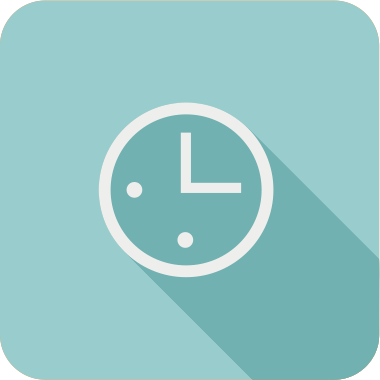

총 검사 시간은 1분 내외입니다.
혹 질문이 마음에 들지 않더라도 정직하게 답하세요.
희망 속 자신이 아닌 진짜 자신을 선택하세요.
테스트 후 결과 문자받기
이벤트 참여/마케팅개인정보 수집이용에 동의합니다.
그냥 시작하기
비약, 변화의
가능성을
추진한다.
순서를 정해
일을 추진한다.
당신은
"재기발랄한 활동가"
창의적이며 항상 웃을 거리를 찾아다니는 활발한 성격으로 사람들과 자유롭게 어울리기를 좋아하는 넘치는 열정의 소유자
당신의 성향에 맞는 리플렛을 가져가세요!